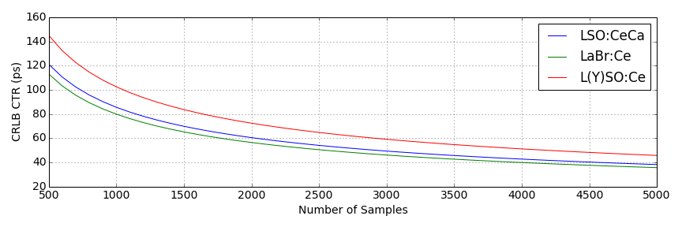
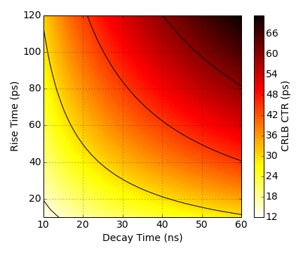

The Crystal Clear Collaboration (CCC) homepage may be found here.
Overview
On this page results relating to the lower bound in the timing performance of scintillator detectors is given. We will first look at the intrinsic performance due to the material. Following this, analytical results pertaining to the light transport within an unwrapped scintillator crystal is given. Finally we will look at the varying contribution due to the photodetector.
Intrinsic Performance
In the above image we calculate the lower bound in the CTR (the CRLB CTR) with increasing number of samples, N. The curve(s) follows the characteristic $\frac{1}{\sqrt{N}}$ shape we expect.
Next we look at varying the rise and decay times directly. In this case we fix $N=3600$. This is chosen as it matches the number of pixels within mppc. In this case we a clear improvement with reductions in the rise and decay time.